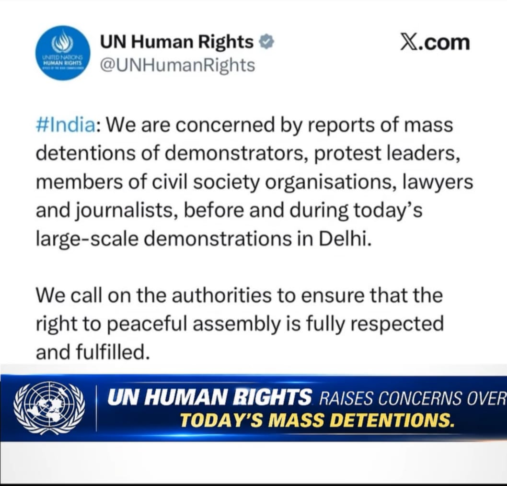

Cockroach Janta Party Protest 2.0
"Jantar Mantar 2.0" — Global outcry as UN, HRW, and Amnesty respond to India's largest crackdown

📌 Executive Summary
On October 10, 2026, the youth-led satirical movement Cockroach Janta Party (CJP) staged its second major protest at New Delhi's Jantar Mantar — dubbed "Jantar Mantar 2.0" — despite the Delhi Police denying permission. The demonstration demanded the resignation of Chief Election Commissioner Gyanesh Kumar and a rollback of the Special Intensive Revision (SIR) of electoral rolls, which has seen approximately 130 million names removed from voter lists.
What followed was India's largest single-day crackdown on protesters in recent history. Over 7,000 people were detained across Delhi. The CJP's top three leaders — Abhijeet Dipke, Saurav Das, and Ashutosh Ranka — were detained from inside their flight at IGI Airport. YouTuber Dhruv Rathee was detained from his Gurugram residence. Four former Chief Ministers were also picked up.
The crackdown triggered an unprecedented international response. The United Nations human rights office called for the release of all "arbitrarily detained" protesters. Human Rights Watch condemned the excessive force. Amnesty International released a new investigation documenting unlawful and deadly police force. International media — BBC, Al Jazeera, Reuters, DW, The Guardian — extensively covered the events.
🎯 The Three Core Demands
- Resignation of CEC Gyanesh Kumar over alleged irregularities in the electoral revision process.
- Immediate freeze of the SIR exercise and restoration of the January 2025 electoral roll.
- Repeal of the Election Commissioners appointment law and an independent, transparent selection procedure.
Sources: Times Now (8 Oct 2026), The Hindu (2 Oct 2026), Reuters (10 Oct 2026).
🌍 International Media Coverage
The October 10 crackdown drew extensive global media attention, with major international outlets covering the events from the ground.
BBC News
The BBC deployed correspondent Azadeh Moshiri to Delhi, who reported live from the scene. In its coverage, the BBC wrote: "Much of Delhi has looked like a city under siege today, with roads barricaded and offices, shops and restaurants shut, even as the Cockroach Janta Party's (CJP) march to Jantar Mantar was largely thwarted."
The BBC also noted that the movement "started in May almost as a joke in response to a remark by India's Chief Justice Surya Kant, who had likened jobless youngsters to 'cockroaches.'" It added that momentum built as the movement "tapped into anger over unemployment, exam paper leaks and government accountability."
Source: BBC News, 10 Oct 2026.
Al Jazeera
Al Jazeera ran a live blog titled "India protest live: 'Cockroach' leaders detained; New Delhi in lockdown." Its reporting documented that police in the Indian capital detained the founder of the CJP "before a protest called by the youth movement to demand the resignation of the chief election commissioner over alleged voter list fraud."
The outlet also published a feature on the movement's "Season 2" — describing how the "viral Gen-Z 'Cockroach Party' protesters are gearing up for Season 2."
Source: Al Jazeera, 10 Oct 2026.
Reuters
Reuters reported that Delhi "cracks down on protesters, shuts metro stations ahead of rally against CEC Gyanesh Kumar" — noting that the protest "aims to draw thousands of demonstrators against Chief Election Commissioner Gyanesh Kumar over a revision of voter lists that critics say favours Prime Minister Narendra Modi's Bharatiya Janata Party."
Reuters also quoted CJP spokesperson Saurav Das as saying protests will continue "until Kumar resigns."
Source: Reuters, 10 Oct 2026 (via Telegraph India).
Deutsche Welle (DW)
DW reported on the CJP's allegations of mass arrests ahead of the protest, with founder Abhijeet Dipke accusing the Modi government of "intimidation." DW also reported extensively on Amnesty International's findings of "excessive force" against CJP protesters.
Source: DW, 9-10 Oct 2026.
The Guardian
The Guardian reported that India's Supreme Court "demanded accountability from the government and the election body over a controversial exercise that has led to the deletion of tens of millions of voters from the electoral roll." It noted that the exercise has "so far led to 130 million names being removed."
Source: The Guardian, 5 Oct 2026.
Other International Coverage
- La Tercera (Chile): Reported "más de 500 detenidos" during the CJP protests.
- Emirates 247 (UAE): Headline: "India Detains 2,000 Protesters Seeking Election Chief Gyanesh Kumar's Resignation."
- Ming Pao (Hong Kong): Reported "逾3000人被捕" (over 3,000 arrested).
- Agenzia Nova (Italy): Reported "oltre 4 mila fermati" (over 4,000 detained) and the UN's call for release of opposition leader.
- Daily Mirror (Sri Lanka): "Cockroach' group leaders among hundreds detained in Delhi protest."
🇺🇳 United Nations Response
The UN human rights office (OHCHR) issued a formal statement on October 10, expressing deep concern over the mass detentions.
UN Human Rights spokesperson Thameen Al-Kheetan said:
"We are concerned by reports of mass detentions in India of demonstrators, protest leaders, members of civil society organisations, lawyers and journalists, before and during today's large-scale demonstrations in Delhi."
The UN called on authorities to ensure that "the right to peaceful assembly is fully respected and fulfilled." It stated that "restrictions on peaceful protests must meet strict tests of necessity and proportionality."
The OHCHR urged law enforcement officers to show "utmost restraint" in responding to peaceful protesters, "in keeping with India's democratic traditions and its human rights obligations." It demanded that "all those arbitrarily detained must be immediately and unconditionally released."
Sources: UN News, The Hindu, Telegraph India (10 Oct 2026).
🔍 Human Rights Watch Statement
Human Rights Watch (HRW) issued a firm statement during the July protests and has maintained scrutiny on the CJP crackdowns. In July 2026, HRW condemned the excessive force used against peaceful protesters at the Jantar Mantar.

HRW's official statement read:
"The authorities should order police to exercise restraint, restore mobile internet connectivity near protests, and ensure people can protest peacefully."
In its detailed July report, HRW accused Indian security forces of using "excessive force to suppress largely peaceful student and youth protests." The organization interviewed 9 witnesses, including protest organizers, journalists, and student protesters, and verified 10 videos posted on social media.
Meenakshi Ganguly, Deputy Asia Director at Human Rights Watch, urged the authorities to "promptly investigate allegations that security forces used truncheons and tear gas" and to "hold those responsible accountable regardless of rank."
HRW also criticized the government for suspending mobile internet services during the protests, saying the shutdown "hindered communication and emergency coordination." It noted that the suspension orders were not made public despite previous guidance from India's Supreme Court.
Sources: HRW, Mashable India, Arab Times, Tolerance.ca (July 2026).
⚖️ Amnesty International Investigation
Amnesty International released a comprehensive digital investigation on August 24, 2026, documenting the police response to the CJP-led "Chalo Sansad" march of July 20.
Key findings:
- Police used pellet-firing shotguns, tear gas launchers, grenades, batons, and electric shock devices against protesters between July 20-24 in Delhi and Siwan, Bihar.
- The weapons were deployed "in a manner that breached international law and standards and domestic policing guidelines."
- Amnesty verified two instances of a police officer unlawfully using lethal force against a crowd.
- The investigation noted that "not a single officer in Delhi has been held accountable" one month after the crackdown.
Amnesty International stated:
"Indian authorities suppressed it first with a communication blackout, barricades and transport disruption. They then attempted to crush it with unnecessary or excessive use of force against peaceful protesters, including children."
Amnesty also noted that the Delhi Police "publicly denied any disproportionate use of force" and described its handling of the protest as "professional." The organization stated that "evidence gathered by Amnesty International directly contradicts this account."
Sources: Amnesty International, DW, Outlook India (Aug 2026).
🚔 CJP Leaders Detained From Inside Flight
In an unprecedented move, Delhi Police personnel boarded a Mumbai-to-Delhi flight at Indira Gandhi International Airport on Saturday morning and detained three top CJP leaders as soon as the aircraft landed.
Abhijeet Dipke (Founder & National Convener), Saurav Das (Co-Convener), and Ashutosh Ranka (Spokesperson) were taken into preventive custody while still inside the flight. A team of around two dozen women constables entered the aircraft and informed the trio that their request for protest had been denied.
Dipke recorded and livestreamed the conversation with police personnel on Instagram. As they spotted the police, the three leaders chanted "Inquilab Zindabad" and "Bharat Mata ki Jai".
Dipke's statement inside the flight: "Where is the nation heading? They are here to arrest us in the flight. Even Indira Gandhi didn't do this. This is dictatorship."
Before boarding his flight in Mumbai, Dipke had posted on X: "Modi has accepted defeat even before our protest has begun."
Sources: ThePrint, Times of India, The Hindu, BBC, Telegraph India (all 10 Oct 2026).

🔄 Ajinkya Shinde Takes Over — The New Face of CJP

In a pre-recorded video released on CJP's X handle shortly after Dipke's detention, the founder announced that Ajinkya Shinde, the party's National Organisation In-Charge, would lead the protest until the detained leaders were released.
Dipke said in the video: "If you are watching this video, it means that I, Saurav Das, and Ashutosh Ranka have been arrested. In our absence, Ajinkya will lead the protest and the CJP movement. Please follow him."
📋 Who Is Ajinkya Shinde?
- Age: 35 years old
- Hometown: Latur, Maharashtra
- Education: BTech (Computer Science)
- Political Background: Former AAP worker
- CJP Role: National Organisation In-Charge (appointed August 2026)
Shinde urged supporters: "The government is scared of our unity. Please come to Jantar Mantar. If the police stop you, turn that very spot into Jantar Mantar."
Sources: News18, NDTV, TheWeek, Times of India (all 10 Oct 2026).
🔒 Delhi Under Siege
Security deployment: Over 35,000 Delhi Police and paramilitary personnel were deployed across the capital. Drones, facial recognition systems, and rooftop spotters were used.
Metro restrictions: Gates at 45 metro stations were closed from 9 PM Oct 9 to 6 PM Oct 10.
Train cancellations: Over 250 trains were cancelled. Services at New Delhi and Hazrat Nizamuddin stations were suspended for 10 hours.
Internet suspension: Mobile internet was suspended within a 4 km radius of Janpath-Kartavya Path crossing from 10 PM Oct 9 to 10 PM Oct 10.
Permission denied: Delhi Police denied permission, citing late application and public safety. Joint Commissioner Nupur Prasad stated prohibitory orders under Section 163 BNSS were in force.
🚔 Mass Detentions: 7,000+
Delhi Police detained over 7,000 protesters across the city on October 10 — making it one of the largest single-day crackdowns in recent Indian history.
- 7,000+ total detentions, per PTI and Times Now.
- 5,900 detained in initial count, later revised to 7,000+.
- 4 former Chief Ministers detained: Arvind Kejriwal, Mamata Banerjee, Pinarayi Vijayan, Manik Sarkar.
- Six Delhi Police personnel injured during detentions.
Detained individuals were shifted to six designated centres: Chhatrasal Stadium, Rajiv Gandhi Stadium, Yamuna Sports Complex, Surajmal Stadium, Community Centre Daulatpur, and Community Centre Pandrawal.
🎥 Dhruv Rathee Detained
YouTuber and political commentator Dhruv Rathee was detained by Gurugram Police from his residence in Sector 56, Gurugram, on the morning of October 10.
Rathee had returned to India from Germany earlier in the week and had participated in the CJP protest in Bengaluru on October 8. He had posted on Instagram that he would be travelling to Delhi.
The CJP responded on X: "Dhruv Rathee has been detained. The Dictator is TERRIFIED of young people who question its wrongdoings and refuse to stay silent!"
🗣️ India vs UN: War of Words
India's permanent mission in Geneva rejected the UN's concerns, calling them "misplaced" and an "unwarranted interference in the internal affairs of India."
India's official statement:
"The OHCHR's concerns are therefore misplaced and constitute an unwarranted interference in the internal affairs of India. In this context, OHCHR would also do well to devote its attention to the large-scale protests elsewhere."
Sources: NDTV, Indian Express, Deccan Chronicle (11 Oct 2026).
✅ Confirmed vs ⚠️ Disputed
✅ Reported as Confirmed
- Delhi Police denied permission for the October 10 protest.
- Section 163 BNSS prohibitory orders were in force.
- 45 metro stations closed; 250+ trains cancelled.
- Mobile internet suspended in a 4 km radius.
- Abhijeet Dipke, Saurav Das, Ashutosh Ranka detained from flight.
- Dhruv Rathee detained from Gurugram residence.
- Over 7,000 protesters detained across Delhi.
- 4 former Chief Ministers detained.
- UN issued formal statement urging release.
- India rejected UN concerns as "unwarranted interference."
- HRW issued statement condemning excessive force.
- Amnesty documented unlawful police force.
- Dipke's grandmother passed away on October 10.
⚠️ Disputed / Unverified
- Total detention count — varies from 500 to 7,000+ depending on source.
- "Dictatorship" framing — political characterisation, not factual claim.
- Stone pelting incidents — reported near Akashwani Bhawan; conflicting accounts.
- Pellet gun use — Delhi Police denied; Amnesty found evidence suggesting otherwise.
- Exact number of metro stations — sources report 45 or 57.
- Grandmother's funeral leave — Dipke granted leave but no confirmation if he attended.
📚 References
- UN News — "India: UN rights office urges release of 'arbitrarily detained' protesters" — 10 Oct 2026. Read →
- The Hindu — "UN human rights body expresses concern over Delhi detentions" — 10 Oct 2026. Read →
- Telegraph India — "Concerned by reports of mass detentions, UN says about Delhi police's crackdown" — 10 Oct 2026. Read →
- BBC News — "Police crack down on 'cockroach' protest in Delhi as group says leaders detained" — 10 Oct 2026. Read →
- BBC News — "India: Why have 'cockroach' protesters been detained in Delhi" — 10 Oct 2026. Read →
- Amnesty International — "India: New investigation documents unlawful and deadly force against CJP-led protests" — 24 Aug 2026. Read →
- HRW / Arab Times — "Human Rights Watch Urges Probe Into Alleged Brutal Delhi Police Response" — 23 Jul 2026. Read →
- Mashable India — "CJP Protest: Ranvir Shorey, Riteish Deshmukh React After Students Tear-Gassed" — 21 Jul 2026. Read →
- Zee News — "Over 7,000 detained, Rs 2,000 crore lost: Inside the day CJP was stopped" — 10 Oct 2026. Read →
- NDTV — "'Unwarranted Interference': India Slams UN's Remarks On Delhi Detentions" — 10 Oct 2026. Read →
- Indian Express — "India slams UN rights body for raising concern over mass detentions" — 11 Oct 2026. Read →
- News18 — "'Ajinkya Will Lead Now': CJP Releases Abhijeet Dipke's Pre-Recorded Video" — 10 Oct 2026. Read →
- Times Now — "Detentions, Crackdowns And A Day Of Chaos" — 10 Oct 2026. Read →
- ThePrint — "2 dozen policewomen board Dipke's flight after landing, detain CJP founder" — 10 Oct 2026. Read →
- Hindustan Times — "YouTuber Dhruv Rathee detained in Gurugram ahead of CJP's Jantar Mantar protest" — 10 Oct 2026. Read →
- Telangana Today — "Abhijeet Dipke's grandmother passes away while CJP founder is detained" — 10 Oct 2026. Read →
- Al Jazeera — "India protest live: 'Cockroach' leaders detained; New Delhi in lockdown" — 10 Oct 2026. Read →
- The Guardian — "India's supreme court demands answers over changes to voter roll" — 5 Oct 2026. Read →
- DW — "India: Cockroach Janta Party leaders allege mass detentions ahead of Delhi protest" — 9 Oct 2026. Read →
- Agenzia Nova — "Proteste in India: oltre 4 mila fermati, l'Onu chiede il rilascio del leader" — 10 Oct 2026. Read →
- La Tercera — "Vuelven 'Las Cucarachas' a las protestas: más de 500 detenidos" — 10 Oct 2026. Read →
- Ming Pao — "印度曱甴人民黨大示威 多名領袖及示威者逾3000人被捕" — 10 Oct 2026. Read →
- Emirates 247 — "Delhi Lockdown: India Detains 2,000 Protesters Seeking Election Chief's Resignation" — 10 Oct 2026. Read →
- The Express Tribune — "Explainer: Why India's tens of millions of voter deletions have led to protests" — 9 Oct 2026. Read →
- Arab Times — "130 Million Voters Off the Rolls, Millions Fear Losing Their Vote" — 8 Oct 2026. Read →
- Times of India — "Protest with no one address: How CJP's 'Jantar Mantar 2.0' call outgrew its venue" — 10 Oct 2026. Read →
- News18 — "Bangla Sahib Becomes Protesters' Refuge, Then Sees Detentions" — 10 Oct 2026. Read →
- bdnews24 — "All 3,000 Delhi detainees freed but Abhijeet Dipke, Dhruv Rathee stay in custody" — 10 Oct 2026. Read →
- News18 — "Delhi Police Use Spike Strips, Barricades To Restrict Movement Amid CJP Protest" — 10 Oct 2026. Read →
📝 Update History
- 10 Oct 2026, 07:35 AM IST — Initial publication.
- 10 Oct 2026, 09:00 AM IST — Added Dhruv Rathee detention.
- 10 Oct 2026, 11:30 AM IST — Added Dipke, Das, Ranka detention details.
- 10 Oct 2026, 01:00 PM IST — Added Ajinkya Shinde succession.
- 10 Oct 2026, 08:00 PM IST — Added UN statement, HRW statement, Amnesty report, international media coverage.
- 11 Oct 2026, 10:00 AM IST — Added 7,000+ detention figure, India vs UN war of words, 29 verified sources.
Spotted an error? Submit via feedback form.
This is a personal field report compiled from publicly available news sources as of the publication time. It is not a substitute for primary reporting or official records. Where claims could not be independently verified, this is stated in-line. The views expressed are not those of any political party, organisation, or government body.
Compiled by Nexus Field Team. Images are representative; attribution pending.